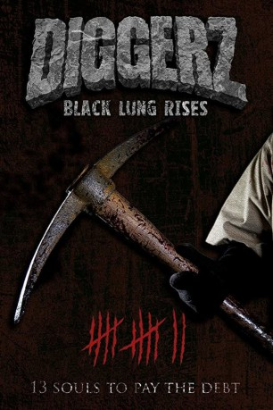

#11291 Hellbound: 13 verdammte Seelen
Alternativ: Diggerz: Black Lung Rises (Englischer Titel)
 
 IMDB-Wertung: 5.8 / 10
IMDB-Wertung: 5.8 / 10  Metascore: 0
Metascore: 0 
Colorado: Eine kleine, verschlafene Bergbaustadt ist seit vielen Jahren der Ort, an dem ein finsteres Geheimnis gehütet wird. Ein Wesen, das halb Mensch ist und halb Monster, terrorisiert das kleine Dort. Die Bewohner leben in blanker Angst! Wenn sie nicht auf der Jagd ist, lebt die Kreatur offenbar in einem alten verlassenen Kohlestollen. Eine Studentin und ein eigenbrötlerischer Außenseiter haben vor, dem Biest aus der Mine Einhalt zu gebieten. Das Morden soll endlich aufhören – doch damit beginnt für die beiden ein wahrer Albtraum…
Jahr: 2017
Dauer: 117 Minuten
FSK: 18
Land: USA Studio: EuroVideoTonspuren:
Untertitel:
Auflösung: 1080p (1920x1080) Größe: 7587 MB
Genre: Horror
Regisseur: David B. Craig, Kirk Loudon
Drehbuch: David B. Craig, Kirk Loudon
Soundtrack: Casey Loudon
Darsteller:
- Steve Roth als
- Damon Pampolina als
- Johanna Winkel als
- Kerry Beyer als
- Lauren Leal als
- Alex Niva als
- Erin Presley-Froemke als
- Dawn Anaya als
- Shawn Barrett als
- Meghan Castle als
- Ronald Clodfelter als
- Pam Colander als
- Mandee George als
- Tobey George als
- Jan Leckenby als
- Julie Loudon als
- Kirk Loudon als
- Kaitlyn Mantelli als
- Dale McCoy als
- Vic Meyers als
- Summer Michaels als
- Turner Murphy als
- Mari Rivas als
- Dan Schmeh als
- Noah Simpson als
- Billie Strickland als
- Lucas White als
- Colin Winchester als
Datei: X:\FSK18-2017\Hellbound 13 verdammte Seelen (2017, FSK18, 1920x1080).mkv seit 17.06.2019
Festplatte: FSK18
 Es gibt insgesamt 24 Filme in der Gruppe 'FSK18-2017'
Es gibt insgesamt 24 Filme in der Gruppe 'FSK18-2017'